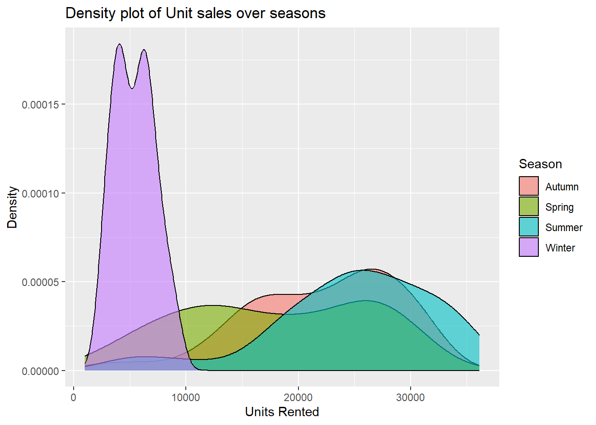

Loading required package: Matrix
Attaching package: 'Matrix'
The following objects are masked from 'package:tidyr':
expand, pack, unpack
Loaded glmnet 4.1-8
Before building our models, we want to get familiar with our data and perform some non-transformative data transformations if needed.
Lets check for the missing values in our data…The good news is there are no missing values!
colSums(is.na(bike_data))
Date Rented Bike Count
0 0
Hour Temperature(\xb0C)
0 0
Humidity(%) Wind speed (m/s)
0 0
Visibility (10m) Dew point temperature(\xb0C)
0 0
Solar Radiation (MJ/m2) Rainfall(mm)
0 0
Snowfall (cm) Seasons
0 0
Holiday Functioning Day
0 0
Diving a level further, lets make sure all of our numeric columns where we should only expect values greater than zero follow that pattern. We will also want to make sure our assumption on values for Seasons, Holiday and Functioning Day hold true.
Everything seems to look good per the output below
List of 8
$ : num 0
$ : num 0
$ : num 0
$ : num 0
$ : num 27
$ : num 0
$ : num 0
$ : num 0
We want a series of transformations and renamings. We want the Date column in a data format. We want Seasons,Holiday,Functioning Day as factors. We also want to rename all of our columns so they’re easier to work with using camel_case format.
We can see everything reflected in our structure output.
One major thing that stands out is no bikes are sold on a non-functioning day. This makes sense because a bike shop cannot sell bikes when it is closed. We will subset the data to only look at functioning days
For modeling and summaries later, we want to look at day-level granularity rather than hourly. Lets transform the data using dplyr to give us some appropriate aggregate measures of our weather related variables.
`summarise()` has grouped output by 'date', 'season'. You can override using
the `.groups` argument.
head(agg_bike_data)
# A tibble: 6 × 12
# Groups: date, season [6]
date season holiday rented_bike_count total_rainfall_mm
<date> <fct> <fct> <dbl> <dbl>
1 2017-12-01 Winter No Holiday 9539 0
2 2017-12-02 Winter No Holiday 8523 0
3 2017-12-03 Winter No Holiday 7222 4
4 2017-12-04 Winter No Holiday 8729 0.1
5 2017-12-05 Winter No Holiday 8307 0
6 2017-12-06 Winter No Holiday 6669 1.3
# ℹ 7 more variables: total_snowfall_cm <dbl>, avg_temp_c <dbl>,
# avg_humidity_perc <dbl>, avg_windspeed_ms <dbl>, avg_dew_temp <dbl>,
# avg_solar_radiation <dbl>, avg_visibility <dbl>
Lets recreate our basic summary tables from the previous steps using this data. There is no need to do this for func_day anymore since there is only one value after our previous subsetting
We want to explore some relationships we’re curious about and visualize them in plots. There are more than a dozen we can explore, but for the purpose of keeping this concise you can the following plots an their observations.
Scatter plot between rented bikes and the average temperature colored by season. We notice a positive correlation and obvious grouping of temperatures based on season. This is expected.
Scatter plot between rented bikes and the average solar radiation colored by season. We notice a positive correlation and obvious grouping of solar radiation based on season. This is expected.
Density plot for units sold colored by season. We see a larger spread for most seasons except for winter which seems to hold a smaller spread of units sold by day.
Boxplot for visibility across season. We observe boxplots with somewhat spread, but spring seems to have a lower median that others indicating lower visibility. Perhaps this is due to fog in the spring.
sales_temp_scatter <-ggplot(agg_bike_data,aes(x=avg_temp_c,y=rented_bike_count,color=season)) +geom_point() +labs(title='Temp & Units Rented Plot colored by Season') +xlab('Temperature (C)') +ylab('Bikes Rented')sales_radiation_scatter <-ggplot(agg_bike_data,aes(x=avg_solar_radiation,y=rented_bike_count,color=season)) +geom_point() +labs(title='Radiation & Units Rented Plot colored by Season') +xlab('Radiation') +ylab('Bikes Rented')season_sales_dens <-ggplot(agg_bike_data,aes(x=rented_bike_count)) +geom_density(aes(fill=season),alpha=0.6) +labs(title ='Density plot of Unit sales over seasons',fill ='Season') +xlab('Units Rented') +ylab('Density')season_visibility_box <-ggplot(agg_bike_data, aes(x=season, y= avg_visibility)) +geom_boxplot(varwidth=T, fill="lightblue") +labs(title="Visibility by Season Box", x="Season",y="Visibility")sales_temp_scatter
sales_radiation_scatter
season_sales_dens

season_visibility_box
We want to calculate some correlations. You can read the output below as a correlation matrix. Some notable relationships include…
0.75 correlation value between the bike count and the average temperature for that day
0.735 correlation value between the bike count and the average solar radiation for that day
Weak but negative correlation (~-0.25) for rainfall, snow and wind against bike count.
All of these loosely point to more sales on warm and sunny days!
Now that we’ve done some exploratory analysis, lets get started on our model creation. First we’ll split our data in test and training sets (seasons as strata). We’ll also split our training set in folds for cross-validation.
We can see our split is 75/25 (training/testing) and that there are 10 folds in our training set in the output below.
Lets construct three recipes. For each recipe, we’ll factor our dates to either “Weekday” or “Weekend” depending on the day of the week. We’ll also normalize our numeric variables and create dummy variables for our categoricals.
Here’s where our 3 models different slightly: 1. Recipe 1 is exactly as described above with no additional changes 2. Recipe 2 adds interactions between holiday & seasons, seasons & temperature, and temperature & rainfall 3. Recipe 3 includes everything in Recipe 2 with the added complexity of our numeric predictors having quadratic terms.
# A tibble: 6 × 6
.metric .estimator mean n std_err .config
<chr> <chr> <dbl> <int> <dbl> <chr>
1 rmse standard 4060. 10 210. Preprocessor1_Model1
2 rsq standard 0.832 10 0.0228 Preprocessor1_Model1
3 rmse standard 3353. 10 240. Preprocessor1_Model1
4 rsq standard 0.877 10 0.0229 Preprocessor1_Model1
5 rmse standard 3309. 10 191. Preprocessor1_Model1
6 rsq standard 0.883 10 0.0192 Preprocessor1_Model1
Since our interaction and polynomial model is our best model, we want to keep this, evaluate against our entire training set and test against our test set.
Our RMSE evaluated against our test data can be seen in the first output module. We can also see our coefficients from the fitted model in the second output module.
In our output above, we see a table of our estimates for our different parameters, which includes some interactions and polynomials. We can also see our standard errors.
To use this module, we can plug in our parameters and use the predict() function to see how our best MLR model would perform against new data. We won’t do this here, but we now know our coefficients.
Additional Models
We’ll consider some additional models as well. This includes the following:
Lasso Model
Regression Tree Model
Bagged Model
Random Forest Model
Lasso Model
Starting with our Lasso Model. We can re-use our first from the MLR steps which is simply named recipe_1. We will have our lasso model and then create our workflow.
Going one step further, lets unpack the above output to make it a little cleaner and more readable. To reduce clutter, we’ll show the output for lasso_grid_1.
Again, this seems hard to read as the RMSE seems static across penalties. Note that there are 200 records in this tibble, so we should see some differences on the back-end of our records.
Using our best model, we’ll train on the training dataset and evaluate performance against the test set. See our metrics below for RMSE for our best Lasso Model.
# A tibble: 2 × 4
.metric .estimator .estimate .config
<chr> <chr> <dbl> <chr>
1 rmse standard 4258. Preprocessor1_Model1
2 mae standard 3261. Preprocessor1_Model1
Lasso Summary
Below we see our table of coefficients for our best lasso model fit to our training data. This includes our estimates and our tuning parameter (penalty)
Now we want to fit our data to our cross-validation folds. We’ll use our workflow we created above and tune our grid using the folds. Note that we are not specifying the levels for tuning complexity and tree depth.
We can see in our output the cost complexity and tree depth parameters used along with their RMSE and RSQ.
Using the above, lets finalize our workflow using our best parameters. Using this workflow we’ll train on our training set and calculate our performance metrics on the test set.
We see our RMSE and RSQ of our best regression tree model outputted below.
Now we’ll tune a bag tree model and pick the best from this class of models. Per usual, lets start with defining the model and building the workflow. Again, we’ll use recipe_3 from our linear regression section since we can reuse it here.
Our tree depth is set to 5 and the minimum number of nodes is 10 leaving cost complexity as our tunning parameter.
# A tibble: 15 × 7
cost_complexity .metric .estimator mean n std_err .config
<dbl> <chr> <chr> <dbl> <int> <dbl> <chr>
1 1 e-10 rmse standard 3221. 10 203. Preprocessor1_Model01
2 4.39e-10 rmse standard 3202. 10 168. Preprocessor1_Model02
3 1.93e- 9 rmse standard 3192. 10 185. Preprocessor1_Model03
4 8.48e- 9 rmse standard 3147. 10 174. Preprocessor1_Model04
5 3.73e- 8 rmse standard 3131. 10 221. Preprocessor1_Model05
6 1.64e- 7 rmse standard 3184. 10 154. Preprocessor1_Model06
7 7.20e- 7 rmse standard 3126. 10 200. Preprocessor1_Model07
8 3.16e- 6 rmse standard 3177. 10 185. Preprocessor1_Model08
9 1.39e- 5 rmse standard 3127. 10 186. Preprocessor1_Model09
10 6.11e- 5 rmse standard 3061. 10 207. Preprocessor1_Model10
11 2.68e- 4 rmse standard 3236. 10 142. Preprocessor1_Model11
12 1.18e- 3 rmse standard 3152. 10 193. Preprocessor1_Model12
13 5.18e- 3 rmse standard 3190. 10 187. Preprocessor1_Model13
14 2.28e- 2 rmse standard 3762. 10 197. Preprocessor1_Model14
15 1 e- 1 rmse standard 4786. 10 318. Preprocessor1_Model15
Using that model with our tuned parameters, we’ll finalize our workflow, train the data and look at performance metrics on the test set. We’ll use the lowest RMSE to select our best model
# A tibble: 2 × 4
.metric .estimator .estimate .config
<chr> <chr> <dbl> <chr>
1 rmse standard 3059. Preprocessor1_Model1
2 mae standard 2341. Preprocessor1_Model1
Bagged Summary
Below we can see our final variable plot for our bagged tree. This tells us the importance of our variables. We see that Average Temperature, Average Solar Radiation and Average Dew Temp are our most important variables.
# A tibble: 2 × 4
.metric .estimator .estimate .config
<chr> <chr> <dbl> <chr>
1 rmse standard 2733. Preprocessor1_Model1
2 mae standard 2154. Preprocessor1_Model1
Random Forest Summary
In our fit on our bike train data, we see that 2 of our top 3 variables in terms of importance are the same as our Bagged Model. Those two are Average Temperature and Average Solar Radiation. Where it differs is the binary variable denoting the season winter as our third most important variable in this model!
# A tibble: 10 × 4
.metric .estimator .estimate .config
<chr> <chr> <dbl> <chr>
1 rmse standard 2733. Preprocessor1_Model1
2 mae standard 2154. Preprocessor1_Model1
3 rmse standard 3059. Preprocessor1_Model1
4 mae standard 2341. Preprocessor1_Model1
5 rmse standard 4258. Preprocessor1_Model1
6 mae standard 3261. Preprocessor1_Model1
7 rmse standard 3670. Preprocessor1_Model1
8 mae standard 2697. Preprocessor1_Model1
9 rmse standard 2629. Preprocessor1_Model1
10 mae standard 2007. Preprocessor1_Model1
Final Model
Our MLR model was our winner! The last thing to do is to fit that model on the ENTIRE data set instead of our training and test splits. The final output and metrics are below.
We can see our coefficient estimates fitted against the entire dataset below for our best MLR model. This includes interactions and polynomial terms